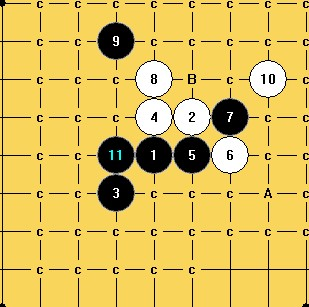
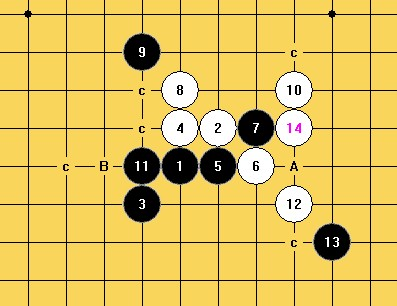
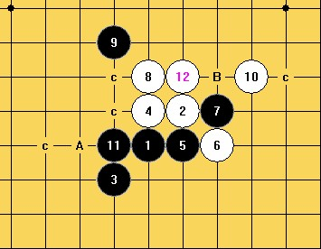
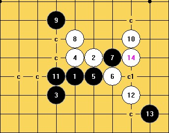

关于斜月三打11手的讨论
#1 关于斜月三打11手的讨论作者：山城刀客 发表时间：2012-2-26 20:08:06

图1
如上图所示，这个11手很常见，关于它的结论一直是众说纷纭，这个局面也一直困扰着我，今日贴出来和大家讨论交流下。
11之手，12手显然只有A和B两个应点，下面逐个分析：
一：若是12手走A点：
图2
13手后，14手有A和B两个点，各自走后得到下面两个局面：

图3 图4
图3继续往后面拆，得到：
图5 图6
关于图5中的16手若是走C1点，则是必败，若是走A点后，得到：
图7
继续拆 ，得到如下两图：
图8 图9
二：若是12走B点：

一、二各图中局面汇总后，得到如下三图：

图A 显然是黑优的一个局面。
图B 显然也是黑优的一个局面。
图C继续深入拆解：
图11 26手及以前双方都是唯一，这个黑点27也是唯一，27手之后成为难局：
这个11手真是让人觉得扑朔迷离，也许是我自己拆错了，贴出来和大家一起讨论下。
［ 簡單 于 2012-2-28 11:16:20 时花20金币送鲜花一朵］
［ 簡單 于 2012-2-28 11:16:34 时花20金币送鲜花一朵］
［ 簡單 于 2012-2-28 11:16:50 时花20金币送鲜花一朵］
［ 簡單 于 2012-2-28 11:17:48 时花20金币送鲜花一朵］
［ 簡單 于 2012-2-28 11:18:07 时花20金币送鲜花一朵］
［ 簡單 于 2012-2-28 11:18:47 时花20金币送鲜花一朵］
［ 簡單 于 2012-2-28 11:19:13 时花20金币送鲜花一朵］
#2 Re:关于斜月三打11手的讨论作者：虎哥 发表时间：2012-2-26 22:09:29
［ 山城刀客 于 2012-2-27 1:02:17 时花20金币送鲜花一朵］
［ 山城刀客 于 2012-2-27 1:02:23 时花20金币送鲜花一朵］
［ 簡單 于 2012-2-28 11:19:49 时花20金币送鲜花一朵］
#3 Re:关于斜月三打11手的讨论作者：逆刃 发表时间：2012-2-26 22:41:32
LZ的终结者设置应该有不少BUG，建议修改下。［ 山城刀客 于 2012-2-27 1:03:12 时花20金币送鲜花一朵］
［ 山城刀客 于 2012-2-27 1:07:20 时花20金币送鲜花一朵］
#4 Re:关于斜月三打11手的讨论作者：山城刀客 发表时间：2012-2-27 1:05:30
我的终结者是08破解版的，设置如上图所示，请逆刃兄等朋友帮忙修改下，感谢！
#5 Re:关于斜月三打11手的讨论作者：屏蔽 发表时间：2012-2-27 7:50:17
结论而言，这个9是必败的，五子棋交流版块金币悬赏那里有相关主题
不过没记错的话应该没有完整棋谱放出
但是这个11的话地毯应该不难
［ 山城刀客 于 2012-2-27 11:05:39 时花20金币送鲜花一朵］
［ 山城刀客 于 2012-2-27 11:05:56 时花20金币送鲜花一朵］
#6 Re:关于斜月三打11手的讨论作者：逆刃 发表时间：2012-2-27 9:04:04
单从你的贴图上看，最大的问题是容错搜索，建议不要勾选。［ 山城刀客 于 2012-2-27 11:06:21 时花20金币送鲜花一朵］
［ 山城刀客 于 2012-2-27 11:06:44 时花20金币送鲜花一朵］
#7 Re:关于斜月三打11手的讨论作者：山城刀客 发表时间：2012-2-27 11:08:59
非常感谢楼上各位的意见和帮助！！！
#8 Re:关于斜月三打11手的讨论作者：山城刀客 发表时间：2012-2-27 13:14:23
对于上图这一路，拆除白必胜很难呀！
#9 Re:关于斜月三打11手的讨论作者：虎哥 发表时间：2012-2-27 18:21:36
你终结者bug了吧，这个是相通的啊
［ 山城刀客 于 2012-2-27 19:19:42 时花20金币送鲜花一朵］
［ 山城刀客 于 2012-2-27 19:21:29 时花20金币送鲜花一朵］
#10 Re:关于斜月三打11手的讨论作者：清缘 发表时间：2012-2-27 20:40:56
#11 Re:关于斜月三打11手的讨论作者：山城刀客 发表时间：2012-2-27 21:43:25
经过虎哥、逆刃兄等朋友的帮助，这个11已经完全地毯，图谱如下：
 附上小谱： 斜月三打必败11地毯谱.rar
斜月三打必败11地毯谱.rar
下图的16是必败的：
下图的17也是必败的：
附上简谱：必败的17.rar［ 虎哥 于 2012-2-28 21:19:02 时花20金币送鲜花一朵］
［ 簡單 于 2012-3-2 16:51:18 时花20金币送鲜花一朵］
［ 失落刀 于 2012-3-22 7:52:43 时奖励此帖[金币加 100 威望加1］
［ 冰雪笑醉 于 2012-3-22 18:50:46 时花20金币送鲜花一朵］
［ 冰雪笑醉 于 2012-3-22 18:50:47 时花20金币送鲜花一朵］
［ 冰雪笑醉 于 2012-3-22 18:50:49 时花20金币送鲜花一朵］
#12 Re:关于斜月三打11手的讨论作者：虎哥 发表时间：2012-2-27 21:45:08
清缘大师是想问这个21怎么杀吗
［ 山城刀客 于 2012-2-27 21:57:17 时花20金币送鲜花一朵］
［ 清缘 于 2012-2-27 22:19:21 时花20金币送鲜花一朵］
#13 Re:虎哥【==Re:关于斜月三打11手的讨论==】作者：清缘 发表时间：2012-2-27 22:28:41
是呀是呀，我记得以前没算出来，路过就提提问。。。
#14 Re:关于斜月三打11手的讨论作者：清缘 发表时间：2012-2-27 22:33:05
不过我好像记错了。。19应该不冲，会复杂一点#15 Re:关于斜月三打11手的讨论作者：业余九级菜手 发表时间：2012-3-22 0:00:08
都可以
#16 Re:关于斜月三打11手的讨论作者：山城刀客 发表时间：2012-3-22 14:08:26
关于清缘大师问的这个21，其实并不复杂，如下图22杀：
如有疑问，请贴图讨论。
#17 Re:关于斜月三打11手的讨论作者：冰雪笑醉 发表时间：2012-3-22 18:52:26
刀客拆棋辛苦啦！
［ 山城刀客 于 2012-3-22 23:07:55 时花20金币送鲜花一朵］
#18 Re:关于斜月三打11手的讨论作者：罗源棋手 发表时间：2014-1-27 16:23:48
屏蔽屏蔽。。。这个9败的饼有么。。。我自己刚才搞了下最强11搞不出来。。呜呜。。